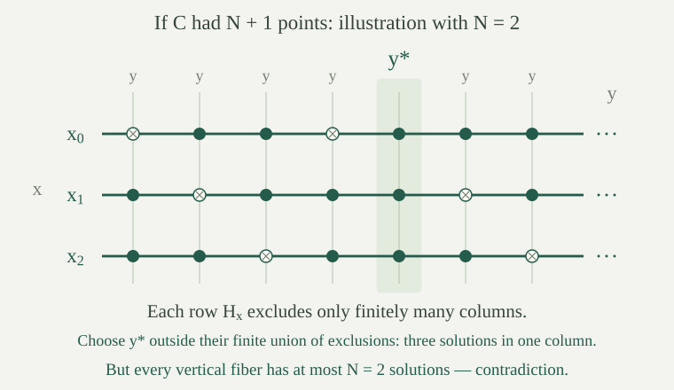

An infinite set with only equality has a simple restriction on definable subsets: a formula with finitely many parameters can select finitely many named points, or everything except finitely many such points. A dense order allows a different possibility, a half-line with infinitely many points on both sides.
A subset of a set is cofinite if its complement is finite. An infinite first-order structure \(M\) is minimal if every definable subset of its domain, allowing any finite tuple of parameters from \(M\), is finite or cofinite. It is strongly minimal if every elementary extension of \(M\), including \(M\) itself, is minimal.
A theory \(T\) is strongly minimal if all its models are infinite and every unary definable set in every model, with parameters allowed, is finite or cofinite. Each model of such a theory is a strongly minimal structure: an elementary extension remains a model of \(T\).
We work with a strongly minimal theory \(T\) in a set-sized language \(L\), and with algebraic closure inside a specified \(M\models T\). Recall that \(b\in\operatorname{acl}_M(A)\) means that \(b\) lies in some finite \(A\)-definable set. This definition uses finite choices of possible answers; it does not assume field operations. The geometric conclusion below concerns this closure on the whole domain.
For every \(L\)-formula \(\varphi(x;\bar y)\) with one object variable, there is a natural number \(N\) such that, for every \(M\models T\) and every parameter tuple \(\bar b\) in \(M\),
In particular, every finite fiber has size at most \(N\), and every finite complement has size at most \(N\). The bound may depend on the formula, but not on the model or the values of its parameters.
Suppose no such \(N\) exists. Add a fresh constant tuple \(\bar c\) for the parameters. For every positive integer \(n\), require at least \(n\) distinct solutions of \(\varphi(x;\bar c)\), and at least \(n\) distinct solutions of \(\neg\varphi(x;\bar c)\). Each requirement is first-order, using \(n\) witnesses and their pairwise inequalities.
A finite part of these requirements has a largest witness count \(n\). Failure of the asserted bound, with \(N=n\), supplies a model of all of \(T\) and a parameter tuple whose fiber and complement each have more than \(n\) points. Interpreting \(\bar c\) by that tuple satisfies the finite part. A fragment with no requirements uses any model of \(T\).
Compactness gives one model of \(T\) satisfying all the requirements. Its \(\bar c\)-definable set and its complement are both infinite, contrary to strong minimality. Thus a bound exists. Since the domain of every model of \(T\) is infinite, a finite fiber cannot have a finite complement, or conversely. The bound in the displayed disjunction must therefore apply to the finite side, proving the last assertions.
For a fixed formula \(\varphi(x;\bar y)\), choose the bound \(N\) from . The parameter tuples \(\bar b\) for which \(\varphi(M;\bar b)\) is cofinite are defined, uniformly in models of \(T\), by the formula saying that \(\varphi(x;\bar b)\) has at least \(N+1\) distinct solutions.
A finite fiber has at most \(N\) points, so it cannot satisfy this formula. A cofinite fiber in an infinite domain is infinite, so it does satisfy it. Every fiber has one of these two forms by strong minimality. This proves the equivalence. Equivalently, use the negation of the at-most-\(N\)-solutions formula \(B_N\varphi\).
Suppose \(b\in\operatorname{acl}_M(A\cup\{a\})\). There are a finite tuple \(\bar c\) from \(A\), a formula \(\psi(x;y,\bar c)\), and a natural number \(N\) such that \(\psi(b;a,\bar c)\) holds and every vertical fiber
has at most \(N\) elements, for every \(y\in M\).
Choose a formula \(\varphi(x;y,\bar c)\) whose fiber at \(y=a\) is finite and contains \(b\). A finite parameter list from \(A\cup\{a\}\) can be written this way by replacing every occurrence of the distinguished parameter \(a\) by the same variable \(y\); it is allowed that \(y\) is unused. Choose a uniform finite-side bound \(N\) for \(\varphi\), treating both \(y\) and \(\bar c\) as its parameter variables. The finite fiber at \(a\) has size at most \(N\).
Define
The size condition holds at \(a\), so the new formula still holds of \(b,a,\bar c\). At any other \(y\), the new fiber is either empty, if the size condition fails, or is exactly the original fiber, with at most \(N\) points. This proves the required uniform vertical bound.
In every model \(M\) of a strongly minimal theory, algebraic closure satisfies exchange: for every \(A\subseteq M\) and \(a,b\in M\),
Use to choose \(\psi,\bar c,N\), with \(\bar c\) from \(A\), such that \(\psi(b;a,\bar c)\) holds and every vertical fiber has at most \(N\) points. Suppose, toward a contradiction, that \(a\notin\operatorname{acl}_M(A\cup\{b\})\).
For each \(x\in M\), let \(H_x=\{y:M\models\psi(x;y,\bar c)\}\), a horizontal fiber. The set \(H_b\) contains \(a\). If it were finite, it would witness that \(a\) is algebraic over \(A\cup\{b\}\). It is therefore infinite, hence cofinite by strong minimality.
Apply the uniform finite-side lemma to \(\psi\) with \(y\) as its one object variable and \(x,\bar c\) as parameter variables. Let \(K\) be its bound on finite horizontal fibers. By , the set
is definable over the finite tuple \(\bar c\): its defining formula asks for \(K+1\) distinct \(y\)'s satisfying \(\psi(x;y,\bar c)\). We have \(b\in C\).
There are at most \(N\) elements in \(C\). Otherwise choose distinct \(x_0,\ldots,x_N\) in it. Their horizontal fibers are cofinite. Their finite intersection is nonempty, since its complement is a finite union of finite sets and \(M\) is infinite. Any \(y\) in that intersection gives \(N+1\) distinct solutions \(x_i\) in one vertical fiber, contradicting its bound \(N\).
Thus \(C\) is a finite \(A\)-definable set containing \(b\), which implies \(b\in\operatorname{acl}_M(A)\). This contradicts the hypothesis. The supposition about \(a\) was false, proving exchange.

A pregeometry on a set \(X\) is an operation \(\operatorname{cl}:\mathcal P(X)\to\mathcal P(X)\) with the following properties for all subsets \(A,B\subseteq X\):
The first three are extensivity and monotonicity, idempotence, and finite character. The last is exchange. There is no requirement that \(\operatorname{cl}(\varnothing)\) be empty. A set \(C\) is closed if \(\operatorname{cl}(C)=C\).
For \(M\models T\) with \(T\) strongly minimal, the operation \(A\mapsto\operatorname{acl}_M(A)\) is a pregeometry.
Algebraic closure is extensive, monotone, and of finite character, and it is idempotent in every structure. The additional exchange property is . These are exactly the defining conditions.
In a pregeometry, a set \(I\subseteq X\) is independent if every \(a\in I\) satisfies \(a\notin\operatorname{cl}(I\setminus\{a\})\). The empty set is independent. A basis of a closed set \(C\) is an independent subset \(B\subseteq C\) with \(\operatorname{cl}(B)=C\). A closed set is finitely generated if it has the form \(\operatorname{cl}(S)\) for some finite \(S\subseteq X\).
The terms apply to the algebraic pregeometry just proved. A dependent point can be one of finitely many solutions rather than a uniquely determined value. Independence is therefore defined using algebraic closure, not only definable closure.
If \(I\) is independent and \(a\notin\operatorname{cl}(I)\), then \(I\cup\{a\}\) is independent. Every subset of an independent set is independent.
Extensivity implies \(a\notin I\). Its own independence condition is the hypothesis. For \(b\in I\), independence gives \(b\notin\operatorname{cl}(I\setminus\{b\})\). If \(b\) belonged to \(\operatorname{cl}((I\setminus\{b\})\cup\{a\})\), exchange with base \(I\setminus\{b\}\) would imply \(a\in\operatorname{cl}((I\setminus\{b\})\cup\{b\})=\operatorname{cl}(I)\), a contradiction. Thus the old points also remain independent.
For a subset \(J\subseteq I\) and \(b\in J\), monotonicity gives \(\operatorname{cl}(J\setminus\{b\})\subseteq\operatorname{cl}(I\setminus\{b\})\). The independence condition for \(I\) therefore implies the one for \(J\).
Every finite \(S\subseteq X\) contains a finite basis of \(\operatorname{cl}(S)\).
List the elements of \(S\) without repetition. Start with \(B=\varnothing\). Upon reaching a point \(s\), retain it by replacing \(B\) with \(B\cup\{s\}\) if \(s\notin\operatorname{cl}(B)\); otherwise keep \(B\).
After each step \(B\) is independent by . Its closure equals that of all points processed so far. To check this invariant, if \(s\in\operatorname{cl}(B)\), extensivity and idempotence imply \(\operatorname{cl}(B\cup\{s\})=\operatorname{cl}(B)\). If \(s\notin\operatorname{cl}(B)\), retaining \(s\) makes the new generating sets agree up to closure: the old processed set lies in \(\operatorname{cl}(B)\), and the old \(B\) lies in that processed set, so monotonicity and idempotence give the same equality after adding \(s\). The initial invariant is equality of \(\operatorname{cl}(\varnothing)\) with itself.
At the end \(B\subseteq S\), \(B\) is independent, and \(\operatorname{cl}(B)=\operatorname{cl}(S)\). Hence it is a basis. This also covers \(S=\varnothing\), whose closed set has the empty basis even when \(\operatorname{cl}(\varnothing)\ne\varnothing\).
If \(I,S\subseteq X\) are finite, \(I\) is independent, and \(I\subseteq\operatorname{cl}(S)\), then \(|I|\le |S|\).
Enumerate \(I=\{a_0,\ldots,a_{r-1}\}\) without repetition. Starting from \(S_0=S\), we will retain a generating set \(S_j\) of size \(|S|\), with \(\operatorname{cl}(S_j)=\operatorname{cl}(S)\), that contains \(a_0,\ldots,a_{j-1}\). The initial set has these properties.
Consider \(a=a_j\). If it already lies in \(S_j\), take \(S_{j+1}=S_j\). Otherwise \(a\in\operatorname{cl}(S_j)\). Let \(P=\{a_0,\ldots,a_{j-1}\}\). Independence and monotonicity give \(a\notin\operatorname{cl}(P)\), since \(P\subseteq I\setminus\{a\}\). Choose an inclusion-minimal subset \(F\subseteq S_j\) with \(a\in\operatorname{cl}(F)\); finiteness of \(S_j\) ensures one exists. It cannot be contained in \(P\). Choose \(b\in F\setminus P\).
Minimality gives \(a\notin\operatorname{cl}(F\setminus\{b\})\), so exchange yields \(b\in\operatorname{cl}((F\setminus\{b\})\cup\{a\})\). Set \(S_{j+1}=(S_j\setminus\{b\})\cup\{a\}\). This replacement preserves cardinality because \(b\in S_j\) and \(a\notin S_j\), and preserves all previously retained \(a_i\) because \(b\notin P\). Each new generator is in \(\operatorname{cl}(S_j)\), and the removed \(b\) is in \(\operatorname{cl}(S_{j+1})\). Monotonicity and idempotence therefore give equal closures in both directions.
After all \(r\) steps, \(I\subseteq S_r\) and \(|S_r|=|S|\). Consequently \(|I|\le |S|\), as asserted.
Every finitely generated closed set in a pregeometry has a finite basis, and any two finite bases of the same closed set have equal cardinality. Their common size is its finite dimension.
Existence follows from . If \(B,C\) are finite bases of the same closed set, then \(B\subseteq\operatorname{cl}(C)\) and \(C\subseteq\operatorname{cl}(B)\). Both are independent. Applying in the two directions gives \(|B|\le |C|\) and \(|C|\le |B|\), hence equality.
These conclusions apply in particular to \(\operatorname{acl}_M(S)\) for finite \(S\) in a model of a strongly minimal theory. They concern finitely generated closed sets and finite bases; no existence or cardinality assertion about arbitrary infinite bases is needed here.
The theory of infinite equality structures is strongly minimal. In any such structure, \(\operatorname{acl}_M(A)=A\), every subset is independent, and the finite dimension of a finite set is its cardinality. Dense linear orders without endpoints are not minimal, even though they too have \(\operatorname{acl}_M(A)=A\).
By equality quantifier elimination, a unary formula using finitely many parameters has the same truth value at all points outside that finite parameter set: all equalities to those parameters are false there. Its solution set is therefore finite or cofinite. This holds in every infinite equality structure, proving strong minimality of their theory.
The computed closure is \(\operatorname{acl}_M(A)=A\). Thus no point of a set lies in the closure of the remaining points, so every set is independent. A finite set is already closed and is its own basis, giving dimension equal to its size.
In a dense order without endpoints, choose \(a\). The definable half-line \(x<a\) is infinite, by repeated use of density and the absence of a left endpoint; its complement is infinite, by the absence of a right endpoint and density. Hence the structure is not minimal. Its algebraic closure nevertheless equals the parameter set by the same linked closure calculation.
Use dense orders to test the converse of the algebraic-exchange theorem.
In a dense order, \(\operatorname{acl}_M(A)=A\). If \(b\in\operatorname{acl}_M(A\cup\{a\})\setminus\operatorname{acl}_M(A)\), then \(b\in(A\cup\{a\})\setminus A\), forcing \(b=a\). Therefore \(a\in A\cup\{b\}=\operatorname{acl}_M(A\cup\{b\})\), which proves exchange directly.
The preceding half-line example shows that this structure is not even minimal. Thus exchange of algebraic closure is a consequence of strong minimality and does not characterize it. The order patterns in dense orders also illustrate information about definable truth patterns that the identity closure does not record.
Expand the language of an infinite equality structure by one constant \(c\). Is its theory strongly minimal? Compute algebraic closure and the finite dimension of \(\operatorname{acl}_M(S)\) for finite \(S\).
Any formula in the expanded language is an equality formula with the additional parameter \(c^M\). Equality quantifier elimination therefore still makes every unary definable set finite or cofinite, in every model of the theory. The theory is strongly minimal.
For every \(A\subseteq M\), the equality closure calculation, now with \(c^M\) always available as a parameter, gives \(\operatorname{acl}_M(A)=A\cup\{c^M\}\). The inclusion from right to left also follows from the defining equalities for named points. In particular, \(\operatorname{acl}_M(\varnothing)=\{c^M\}\).
The set \(S\setminus\{c^M\}\) is independent and its closure is \(S\cup\{c^M\}=\operatorname{acl}_M(S)\). It is therefore a basis, of size \(|S\setminus\{c^M\}|\), which is the finite dimension. For \(S=\varnothing\) that dimension is zero, although its closed set contains \(c^M\). This explains why the pregeometry definition allows a nonempty closure of the empty set.